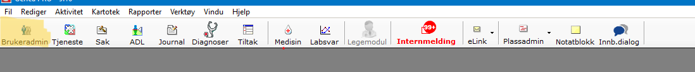
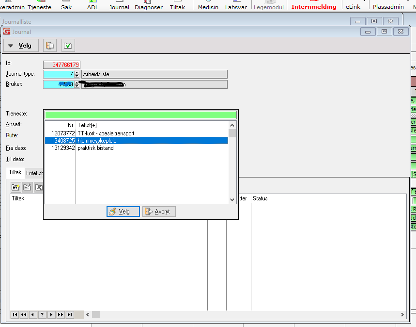
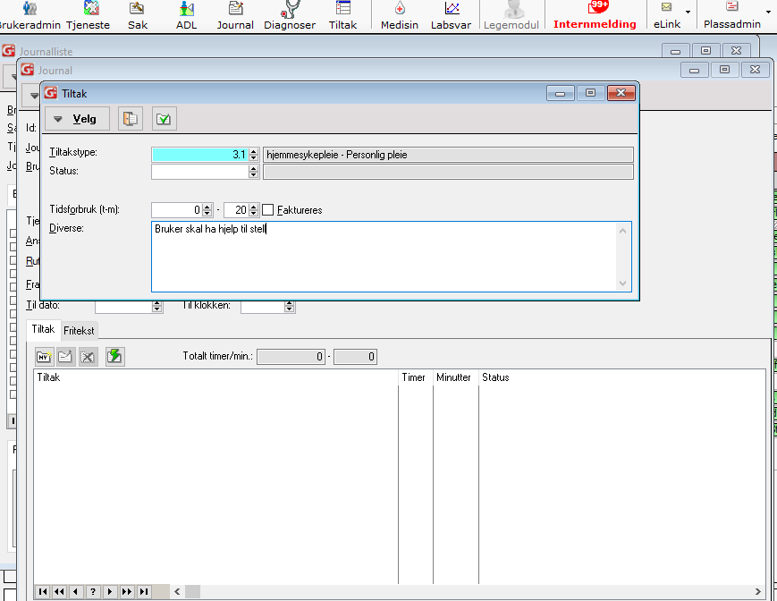
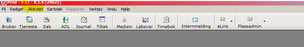
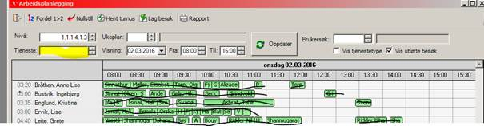
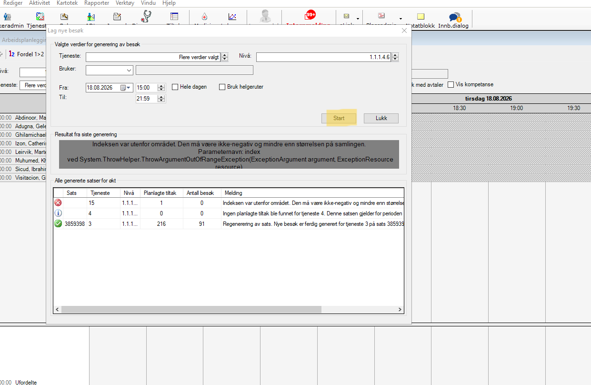
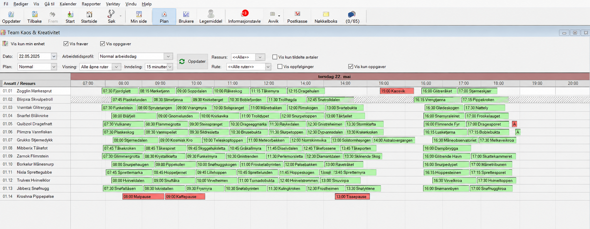

Merkantil
➡️ Klikk på aktivitet

➡️ Klikk på arbeidsplanlegging
➡️ Velg rapport

➡️ Deretter arbeidslister per ansatt

➡️ Ansatt: Mulighet for å kunne skrive ut arbeidslister for en gitt ansatt eller rute. Trykk F4 i verdifeltet og søk opp ansatt. Hvis det skal skrives ut arbeidslister på flere ansatte eller ruter, så fylles ikke feltet ut
➡️ Nivå:
➡️ Type tjeneste:høyreklikk eller trykk på F4 for å søke opp i nivåetre
➡️ Fra/til dato: Datoen du skal skrive ut lister for.
➡️ Hent frem ansattes navn ved å høyreklikke i ansattfeltet og husk og skriv etternavn først. Deretter er det viktig å skrive dato for arbeidslisten. Dersom ansatt jobber dobbelvakt må du skrive inn klokkeslett for å unngå en hel arbeidsliste for hele dagen. Helt til slutt må du taste ikon for skriver øverst til venstre.

➡️ Hvis det skrives ut arbeidslister for flere ansatte eller ruter, så vil oppdragene i aktuell periode komme opp som er fordelt på ansatte/rute
➡️ Fra/Til klokke/utført: Sett inn tidspunkt. Oppdrag som starter innen for gitt kl.slett blir med
➡️ Bachnr: Evnt. sett inn sats/bach nummer(kun per tjenestetype)
➡️ Tast ikon for skriver slik at du får ut arbeidslisten.

➡️ Klikk på brukeroversikt i gerica

➡️ Finn riktig bruker
➡️ klikk på journal
➡️ Klikk på "Ny
➡️ Velg journaltype 7, og trykk på tab
➡️Høyrklikk på tjeneste, velg hjemmesykepleien

➡️ Sett inn riktig dato og klokkeslett
➡️ Sett inn tiltak: trykk på "ny" - høyreklikk på tiltakstype- finn riktig tiltak-legg inn tid



➡️ Klikk på aktivitiet- øverst i siden

➡️ i feltet "tjeneste", ser du bare tallet 3 som er hjemmesykepleien, velg høyreklikk på feltet for å få alle tjenestene opp
➡️ Velg: hjemmesykepleie(tjeneste 3), praktisk bistand(tjeneste 4) og avklaring og mestring(tjeneste 15?)

➡️ Velg dato og om du vil se på dag eller kvelds-ruter. 0730-15 eller 15-22
➡️ Klikk på ok og oppdater siden ved å klikke på oppdater-knappen
➡️Nå ser du alle ruter og besøkene per rute for valgt dato

➡️ Velg og høyreklikk på ansattes navn
➡️ Navnet til alle ansatte som er på jobb, kommer opp
➡️ velg riktig ansatt og flytt alle besøk
➡️ Hvis du skal velge en ansatt som ikke har arbeidsliste: velg en "annen ansatt" og da kan du skrive etternavnet til den ansatte, besøkene skal flyttes til
***Viktig*** Ikke glem å velge alle tjenestene som skal bli med, DVS nr 3, 4 og 15
➡️ Klikk på journal-ikonet øverst på siden

➡️ Et nytt vindu åpner seg, klikk på printer-ikonet
➡️ Skroll ned i det nye vinduet som åpner seg
➡️ Velg ol-Rapport-hjemmesykepleie Ny(dobbelklikk på den)

➡️ velg nivå: dobbelklikk i feltet nivå, høyreklikk og velg hjemmesykepleie team Sør

➡️ Velg Fra/Til dato
➡️ Klikk på printer-ikonet
➡️ Vent til journalene kommer på skjermen, det kan ta noen sekunder
➡️ Klikk på printer. Riktig printer er printix-anywhere
- Klikk på journal øverst i siden
- Klikk på printer-ikonet
- Velg om du vil printe ut for dag eller kveld
- Velg dato for dagen du vil printe ut. Velg dagens dato ved å dobbelklikke og høyreklikke i feltet verdi
- Klikk på printer-ikonet
- Vent til listen vises på siden
- Klikk print

Kommer senere
- Reset Citrix:
- Lukk alle vinduer
- Nederst til høyre i siden, klikk på pillen som peker oppover
- Du ser noen små ikoner, blant annet citrix, teams,...
- Høreklikk på Citrix-ikonet
- Velg advanced preferences
- klikk på reset Citrix
- Klikk på nåla øverst til høyre inni dashbord
- Nåla må peke til venstre
- Klikk en gang inni vaktboka
➡️ Klikk på aktivitet
➡️ Klikk på arbeidsplanlegging og da kommer du til denne siden:

➡️ Høreklikk i feltet tjeneste og velg tjenestene :hjemmesykepleie, praktisk bistand og avklaring og mestring-> klikk på oppdater
➡️ For å lage besøk bare for kvelden, klikk i boksen der det står hele dagen og skriv tiden for kveldsvakten: fra 15 til 22


➡️ Klikk på start og da blir listene for kvelden generert
➡️ Klikk på fordel
➡️ Alle besøk som er blitt generert og ligger nederst på siden kommer opp
➡️ Nå må du rydde listene med hensyn til avstand mellom adressene og oppgaver

➡️
- Printe ut besøksliste dag/kveld
- Printe ut journaler som skal leses på morgenrapport
- Generere arbeidslister
- ➡️ Generer praktisk bistand(tjeneste 4) for 2-3 uker av gangen for å kunne planlegge
- ➡️ Generesere arbeidslister
- ➡️ Hjemmesykepleie: tjeneste 3, AOM: tjeneste 15, praktisk bistand: tjeneste 4
- Bemmaning
- ➡️ Sykdom
- Printe ut bredeskapsplan(frekvensrapport) for 2 uker av gangen
- Printe ut besøksliste
- Printe ut brukerkort for alle brukere en gang i måned
- ➡️ Slutten av måned: regn ut praktisk bistand
- ➡️ Revurderings-journal sendes Når det er noe nytt, f.eks etter tverrfaglig møte
- ➡️ Revurderings-journal: 120-journal-> høyreklikk->finn ok-revurdering
- ➡️ Gat
- ➡️ Følge-oppdrag:
lag oppdrag til aktuell dato og bruker med en gang,
skriv når taxi er bestilt,
Påminnelse om at ansatte som skal følge skal ta med arbeidsseddel - ➡️ Innbyggerdialog
- ➡️ Elise
- ➡️ Nattjeneste
- ➡️
- Printe ut faktureringsgrunnlag og sammenligne tiltakstid med tiden som er journalført
- Plassadministrasjon
- Sjekk pasient-overgang i Elise for å se om det har kommet nye brukere
- Klikk på tjeneste
- Klikk på printer
- Velg "15001 Oslo 84 tiltak med aktive tidsplaner", dobbelklikk
- Klikk på printer,
- det åpner seg etnytt vindu(Rapportvalg for Oslo 84)
- Velg fra/til dato, for 2 uker fra dagensdato
- tjeneste 3
- velg nivå
- Klikk på "ok" også printer-ikon
- Alt må utføres for tjeneste 15 også
- Klikk på Brukeradmin
- Hakk av alle brukere
- Klikk på prinetr
- Det åpnes et vindu med alle brukere
- Print ut, viktig å printe ut på en side: velg printix anywhere
- Print ut og legg i eget perm
Hvor finner jeg ofte brukte skjemaer: